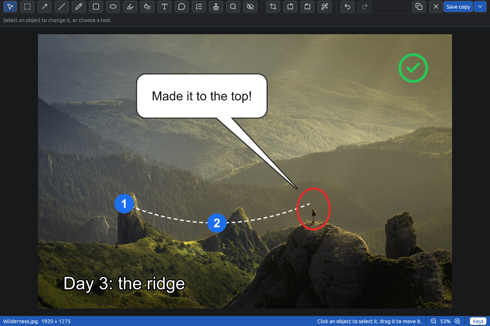
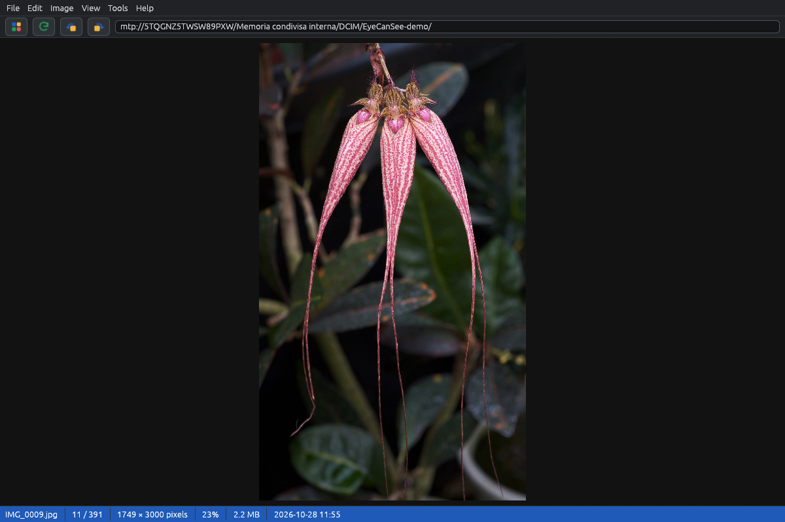
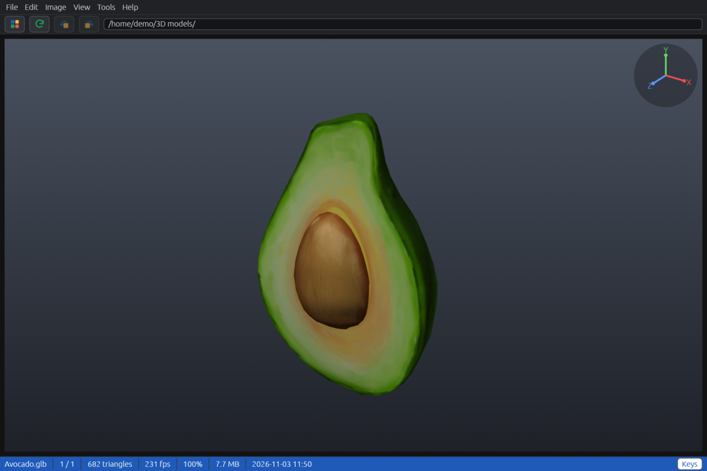
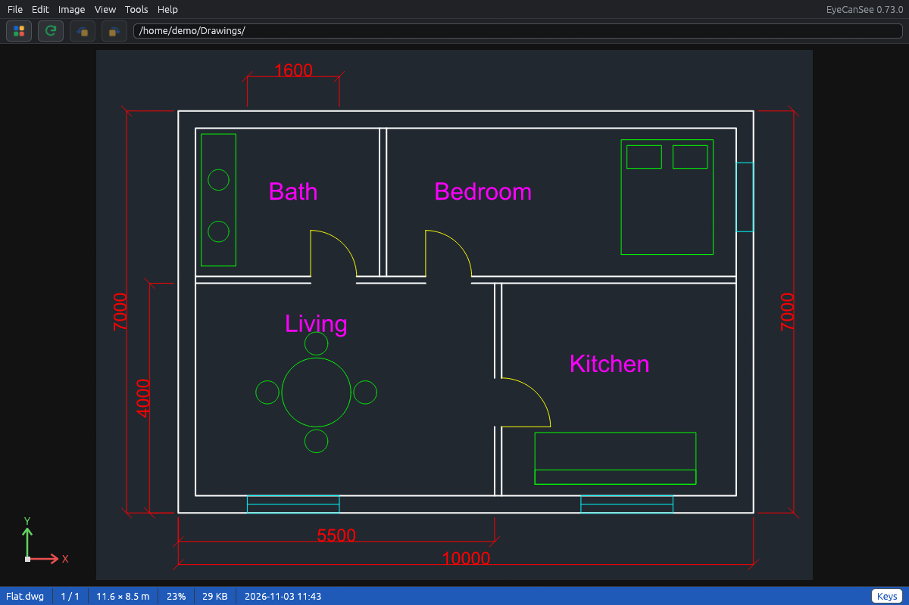
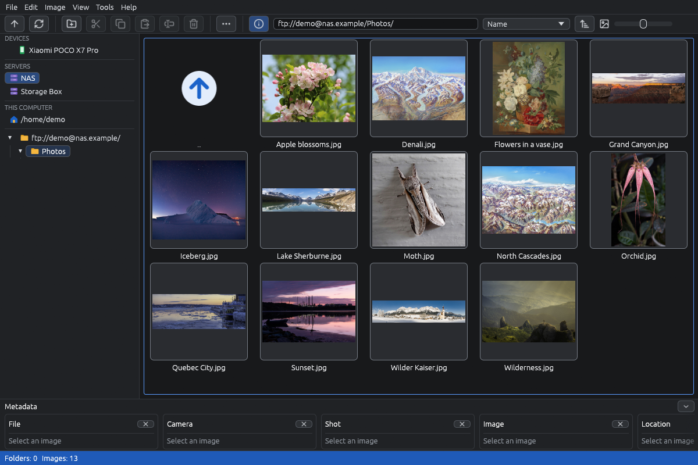
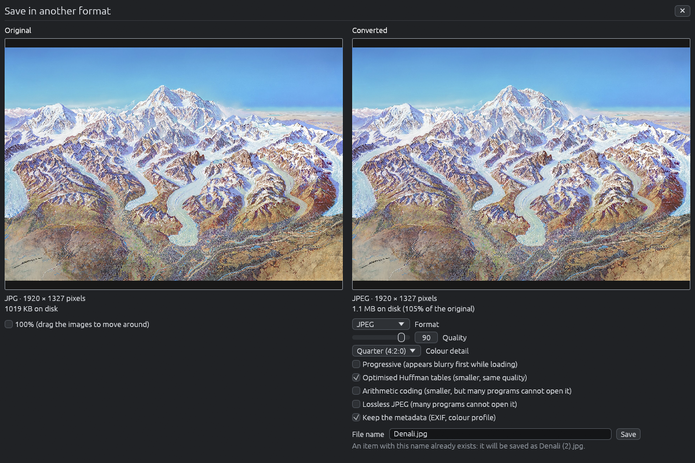
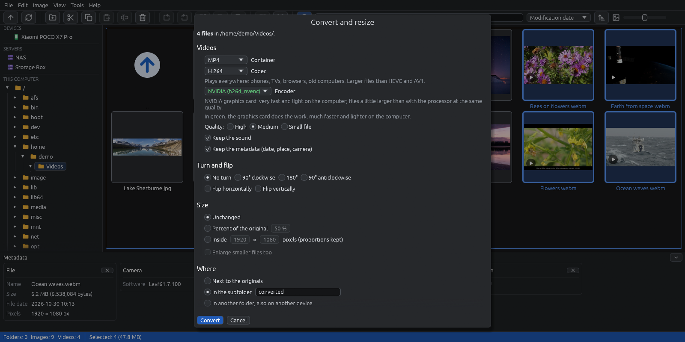
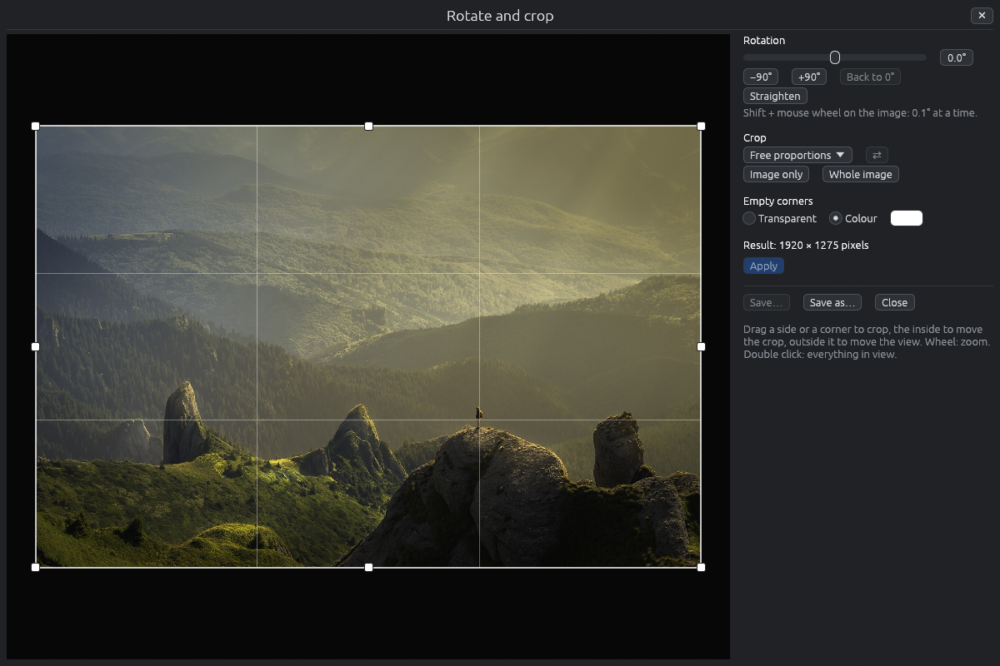
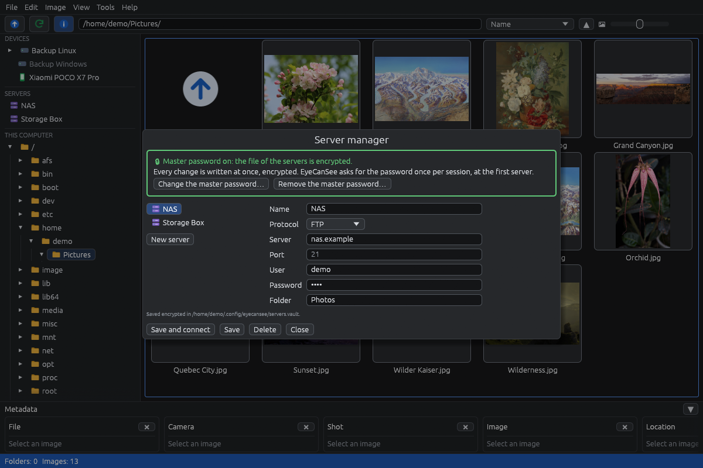

Scarica
Windows
La strada consigliata: il pacchetto è firmato da Microsoft, quindi Windows non mostra l'avviso di SmartScreen, e lo Store lo tiene aggiornato.
In alternativa, dall'ultima release, l'installer (-setup.exe, senza diritti di amministratore) o lo zip da estrarre dove vuoi. La prima volta Windows può avvisarti: fai clic su Ulteriori informazioni, poi su Esegui comunque.
Fedora
Fedora 43 e successive, dal repository COPR: gli aggiornamenti arrivano insieme a quelli del sistema.
sudo dnf copr enable iosonopiero/eyecansee
sudo dnf install eyecanseePer le foto HEIC serve anche libheif-freeworld di RPM Fusion.
Altre distribuzioni Linux
L'.AppImage dell'ultima release: rendila eseguibile e avviala, non c'è altro da installare. Serve una distribuzione del 2022 o più recente.
Per averla nel menu delle applicazioni, aprila con Gear Lever. Si aggiorna da sola.
Cosa fa
Tutto si sfoglia allo stesso modo
Cartelle, dischi esterni e chiavette, server SFTP, FTP e FTPS, telefoni Android e fotocamere via USB. Niente importazione e nessun database: apri una cartella e le foto sono lì.
Visore
Zoom, immagini precaricate così passare dall'una all'altra non fa mai aspettare, dati dello scatto (fotocamera, esposizione, data, posizione sulla mappa), video con l'audio e carosello a tutto schermo.
Copia tra dispositivi
Copia e sposta dal telefono a un disco o a un server e ritorno, rinomina, elimina con un cestino su ogni dispositivo.
Converti
Immagini in JPEG, PNG, WebP, AVIF, TIFF e altri formati, anche tante alla volta; video con FFmpeg, sulla scheda video quando può, conservando i metadati e la traccia GPS di dashcam e droni.
Doppioni
Trova foto, video e file audio identici in una cartella e nelle sue sottocartelle, su qualsiasi dispositivo, e ne tiene sempre almeno una copia.
Formati
HEIC, AVIF, JPEG XL, PSD, RAW delle fotocamere di molte marche e i formati più rari con ImageMagick. In italiano e in inglese, tema chiaro e scuro.
Editor delle immagini
Frecce, testo, forme, numeri di passaggio e timbri sulle immagini, riquadri pieni che coprono i dati privati senza lasciarne niente nel file salvato, filtri, ritaglio e rotazione; anche su telefoni e server. Di più sull'editor.
Modelli 3D, STEP e IGES
STL, OBJ, PLY, glTF, FBX, 3MF e altri, gli edifici IFC, e STEP, IGES e BREP dei CAD meccanici, con un motore scaricato una volta sola. Si vedono con colori e texture, disegnati dalla scheda video, e si esportano in glTF, OBJ, PLY o STL.
Disegni CAD: DWG, DXF e HP-GL
DWG e DXF di AutoCAD e degli altri CAD e file HP-GL per plotter, nitidi a ogni ingrandimento, con livelli, quote, testi e la misura reale del disegno; si esportano come immagine, SVG, o da DWG a DXF e viceversa.
Editor delle immagini

Ctrl+E apre un'immagine nell'editor, anche su un telefono o un server. Il salvataggio scrive una copia accanto all'originale con i suoi metadati, oppure sovrascrive l'originale dopo averlo messo in un cestino; su un telefono o un server, se l'invio non riesce, il risultato resta sul computer. Ctrl+C lo copia per incollarlo in un'altra app.
Annota
Linee e frecce (anche curve), rettangoli, ellissi, mano libera, evidenziatore, riflettore, testo (anche lungo una curva), fumetti, numeri di passaggio, timbri e una lente.
Copri i dati privati
Riquadri pieni: nel file salvato non resta niente di ciò che coprono. Anche sfocatura e pixel grossi, con l'avviso che non bastano a nascondere un testo.
Modifica, poi salva
Filtri su una parte o su tutta l'immagine, selezione per copiare, tagliare e incollare, ritaglio e rotazione di qualsiasi angolo, contagocce. Tutto si sposta e si annulla finché non salvi.
Telefoni via USB: i numeri
Una cartella di 400 file su un POCO X7 Pro via USB, Fedora 44, cache vuote.
Su Linux EyeCanSee parla direttamente col telefono via USB con mtp-rs, una libreria MTP scritta in Rust, invece di passare dal gestore dei file.
Schermate









Le schermate mostrano l'interfaccia in inglese; il programma è anche in italiano.
Fiducia
- Ogni file delle release è firmato con minisign, e il programma installa solo aggiornamenti con una firma valida.
- Gratuito e open source, licenza GPL-3.0-or-later.
- Niente pubblicità, nessun account, e l'app non raccoglie dati; il sito conta le visite senza cookie: vedi l'informativa sulla privacy (in inglese).
- Non faccio più il programmatore: ho scritto EyeCanSee con l'aiuto di Claude Code, e provo ogni funzione sui miei computer e dispositivi prima di inserirla.